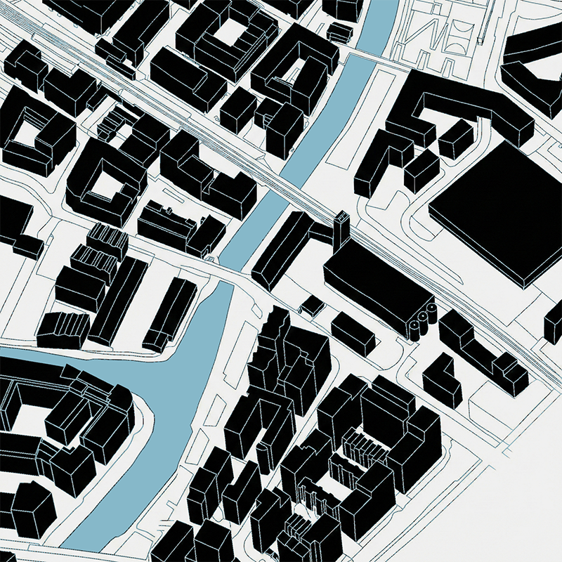
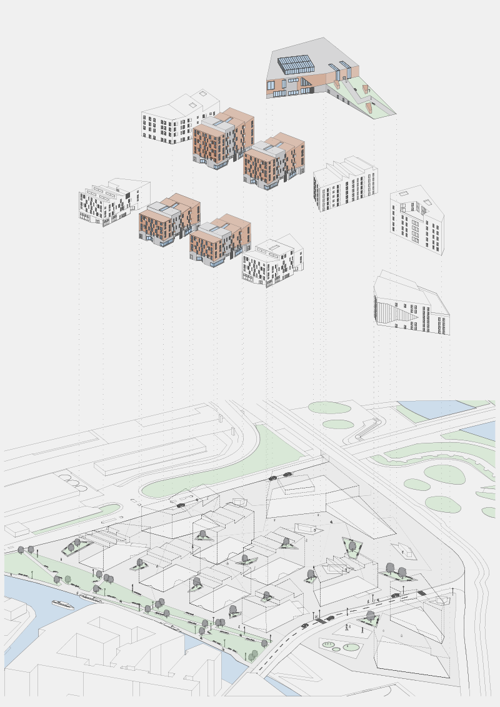
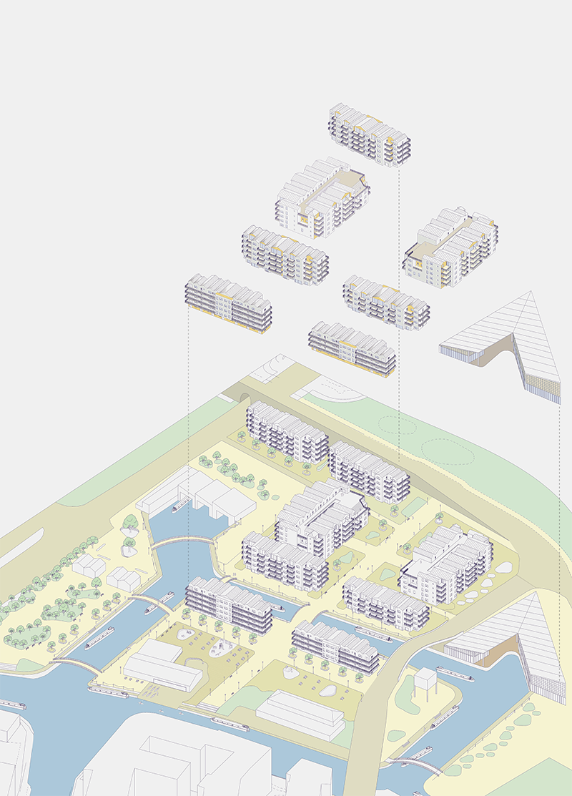

The Everyday Waterfront
Reimagining the Lee Edge
In the UK context, urban waterways have frequently been approached as technical infrastructure: corridors defined by engineering requirements, ownership structures, and risk management. As a result, their spatial and social potential as civic environments has often been limited. The studio explores how waterfront conditions might instead be rethought as part of the public realm, with attention to questions of access, inclusion, spatial capacity, and environmental performance.

This studio invites students to reimagine the edge of the Lee Navigation not as a residual boundary or scenic backdrop, but as a shared, lived environment that forms part of everyday routines, collective use, and long-term ecological processes.
Students will work on a site that sits at the intersection of three neighbourhoods in London’s East End that are currently undergoing significant transformation: Sweetwater and East Wick, Hackney Wick, and Fish Island. These areas are divided by the Lee Navigation and the Hertford Union Canal, which cut across the site along north–south and east–west axes. The studio asks students to critically engage with the ongoing development of these planned areas and work with existing residential plots along the waterfront, reconsidering their role within the wider river-edge condition.

